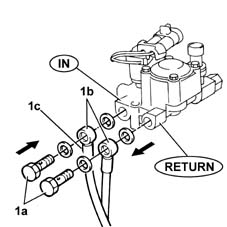
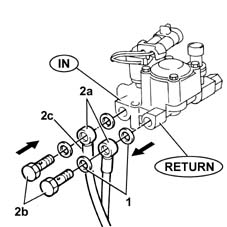

1043B43 pressure regulator for lpg fuel system complete with delivery and return pipes from intermediate connector dismantle and rebuild at bench
- Path
- Procedures > 10 ENGINE UNIT > 1043 LGP TANK AND PIPES > 1043B gpl fuel circuit pipes > 1043B43 pressure regulator for lpg fuel system complete with delivery and return pipes from intermediate connector dismantle and rebuild at bench
- Kind
- repair procedure (removal / refitting; the operation number is the code)
- Applies to
- engines: 1.6 16v; all production periods; only with equipment: GPOWER
- Interactive page
- https://sloeber94.github.io/elrnDB-fMltpl/en/#/2891507
Applies to: engines: 1.6 16v; all production periods; only with equipment: GPOWER and Euro 3
 Dismantling
Dismantling
 Reassembling
Reassembling1. Undo bolts (1a) and remove the delivery and return pipes (1b). the delivery pipe is identified by a strip of red tape (1c)

Applies to: engines: 1.6 16v; all production periods; only with equipment: GPOWER and Euro 3
Reassembling
Dismantling1. Change the washers.
2. Fit LPG delivery and return pipes ( 2a) and tighten bolts (2b); the delivery pipe is identified by a strip of red tape (2c), while the the regulator is marked by the letter 'N' and also a red relief arrow near the outlet.
The retaining bolts on the delivery and return pipes must be tightened to torque with the pressure regulator fitted in the car, so that they can be fitted in the grooves on the pressure regulator mount.
 | Fastening | Component | Ø | Value (daNm) |
|---|---|---|---|---|
2b | Niplo | LPG DELIVERY PIPE FROM CONNECTOR TO REGULATOR. | M10 x 1 | (regulator) 1 |
| Fastening | Component | Ø | Value (daNm) |
|---|---|---|---|---|
2b | Niplo | LPG RETURN PIPE FROM CONNECTOR TO REGULATOR. | M10 x 1 | (regulator) 1 |
